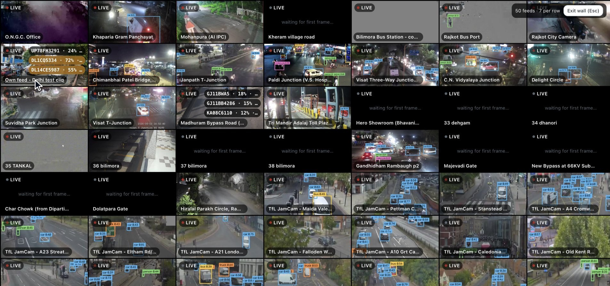
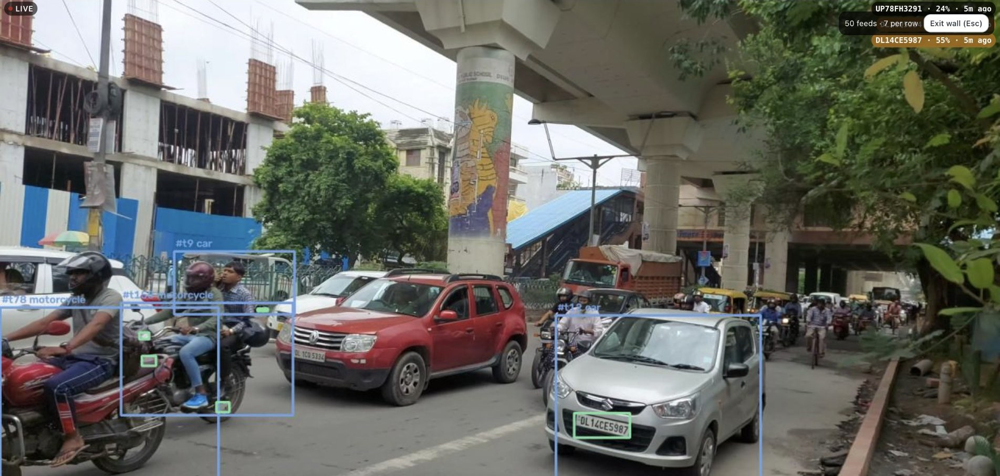
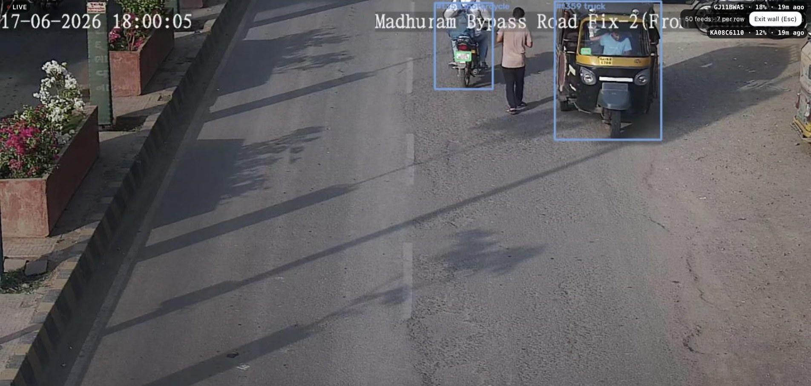

RUNNING TODAY, ON FIFTY LIVE FEEDS
Not a prototype.
A system with numbers.
50/50
278,362
870
301
cameras in service,
all live on one wall
vehicles and objects detected
plate readings, across 15 cameras
automated tests passing
Measured on 15 September 2026, on one laptop:
30 government grid cameras, our Delhi test clip and 19 public TfL cameras.
14
THE LIVE WALL
Fifty cameras, one screen.

Live wall, 14 September 2026. TfL JamCam feeds: Powered by TfL Open Data.
LIVE
Every tile is the feed
Each tile is the camera’s live picture with
the edge’s vehicle detection drawn on it.
THREE SOURCES
One wall
30 government grid cameras, our Delhi test
clip and 19 public London traffic cameras.
17
READING PLATES, LIVE
The plate, read on the live feed.


Our Delhi test clip
Every vehicle boxed; the green box is the plate our ANPR read.
Grid CAM06, Madhuram Bypass Road
Each read carries its confidence, and a low one is shown as low.
18
One laptop watches all fifty feeds live and reads plates on two of them.
Given the hardware a state deploys, the same software reads every
camera, continuously.